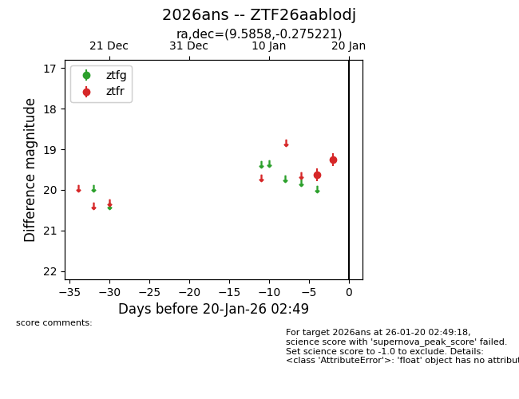
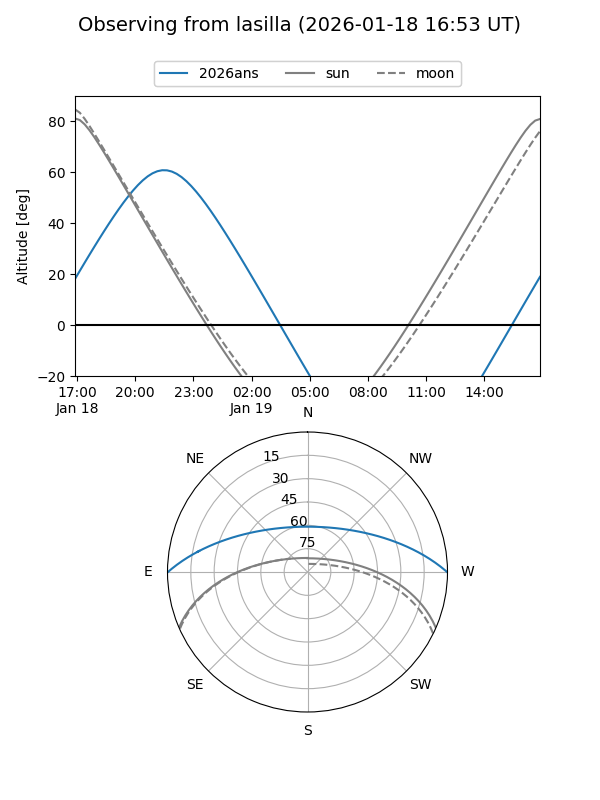
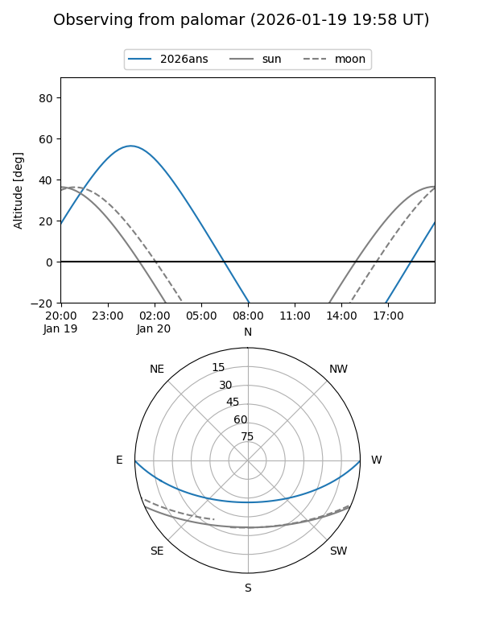

2026ans
Target 2026ans at 2026-01-20 02:51
Aliases and brokers:
FINK: link
Lasair: link
ALeRCE: link
TNS: link
YSE: link
alt names
ZTF26aablodj (ztf,fink_ztf)
2026ans (tns,yse)
Coordinates:
equatorial (ra, dec) = 9.5858,-0.27522
equatorial (HMS+DMS) = 00:38:20.60,-00:16:30.80
galactic (l, b) = (115.7150,-62.96334)
Flags:
Photometry:
last ztfr=19.26
2 ztfr detections
Lightcurve

Visibility


Additional plots